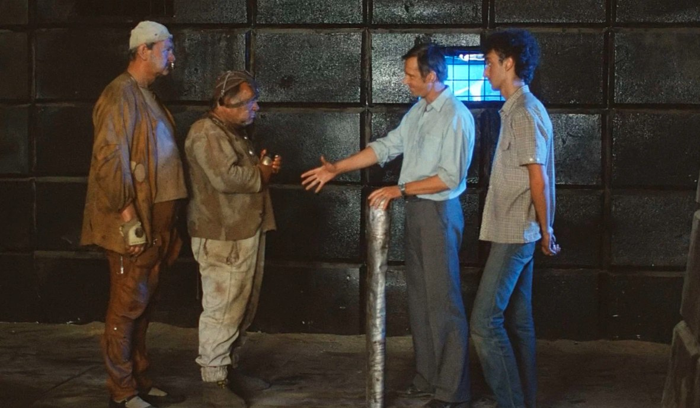

Моя текущая позиция и аутсорсы последних пяти лет на 90% были в западных gamedev-студиях, соответственно и общение было преимущественно с не-ру коллегами. А когда надолго отрываешься от славянских коллективов разработки, то отличия начинают проявляться очень чётко, начиная от модели управления командой и заканчивая культурой разработки. Хотя вот культурой я бы это не назвал, скорее плясками варваров-полуиндусов на останках штатовской империи софтостроения. Индийцы тут ни при чём, а вот практики и сам процесс написания кода очень попахивает этими жителями полумифической страны Индустана. Есть немало книг по истории развития игровой индустрии и истории успехов и провалов разных студий, в основном западных, оставлю в статье список самых интересных и захватывающих, если решите углубиться в историю (кому интересно, будет под спойлером).
Одна из последних — «Not All Fairy Tales Have Happy Endings» (Ken Williams), мемуары одного из основателей Sierra On-Line, прочитана была около года назад и понравилась больше других, наверное потому, что читая книгу, я наконец понимал большинство решений и причин, которые привели к тому или иному результату. Этого понимания точно не было десять лет назад, это сложно объяснить, если не работал непосредственно сам долгое время с людьми с иным образом мыслей, культурным кодом, как сейчас принято говорить. Нынешняя команда на 95% франко-испано-английская — австралийцы, немного европейцев и американцы. В студии по-русски говорят трое, включая меня. До этого в карьере были по большей части всё же ру-студии с привычным менталитетом, пускай и под управлением всё тех же американцев, но менеджмент скрадывал все огрехи и брал «разговоры как надо» на себя, а нам доставались только технические задачи, грамоты и иногда премии. Десять лет назад, придя в индустрию создания игр, я не задавался вопросом, чем отличаются мои таски, мой код, мои идеи от тасок, кода и идей Джона из Кемпбеловки под Сан-Хосе, потому что вокруг были все «свои». Сейчас уже тоже все «свои», но те «свои» от этих «своих» отличаются примерно — всем.
Книги по истории игродева и частично по управлению командами
- «Blood, Sweat, and Pixels» (Jason Schreier) — истории создания известных игр, таких как Diablo III, Uncharted 4 и Stardew Valley, а также трудности, с которыми сталкиваются разработчики.
- «Press Reset: Ruin and Recovery in the Video Game Industry» (Jason Schreier) — вторая книга автора, посвящённая кризисам в игровой индустрии, закрытию студий и судьбе разработчиков.
- «Masters of Doom: How Two Guys Created an Empire and Transformed Pop Culture» (David Kushner) — история создания Doom и id Software, а также о Джоне Кармаке и Джоне Ромеро, которые изменили игровую индустрию.
- «The Ultimate History of Video Games» (Steven L. Kent) — подробная история игровой индустрии с акцентом на ключевые компании и игры, в основном про западные студии.
- «The Art of Game Design: A Book of Lenses» (Jesse Schell) — не только о дизайне, но и о подходах к созданию игр, с примерами из Disney Imagineering.
- «Replay: The History of Video Games» (Tristan Donovan) — охватывает глобальную историю игр, включая вклад западных студий в игрострой (Atari, Electronic Arts и других).
- «Game Over: How Nintendo Conquered the World» (David Sheff) — фокусируется на Nintendo, есть интересные упоминания о взаимодействии японских и западных студий.
- «Stay Awhile and Listen» (David L. Craddock) — история Blizzard Entertainment и её культовых игр.
- «Console Wars: Sega, Nintendo, and the Battle that Defined a Generation» (Blake J. Harris) — о противостоянии Sega и Nintendo в 1990-х.
- «Not All Fairy Tales Have Happy Endings» (Ken Williams) — мемуары основателя Sierra On-Line, рассказывающие о взлёте и падении компании.
- «Время игр! Отечественная игровая индустрия в лицах и мечтах: от Parkan до World of Tanks».
- «История игровой индустрии России» — набор статей на StopGame.
Основное различие, что я вижу: наши отлично работают на форсаже. В пятницу поднимать упавший, под тройным наплывом игроков, прод — это для нас. Вырывая остатки волос там, где они ещё остались, потому что вчера был релиз, фиксить баги с ежечасными апдейтами и ручным фиксом по живым базам — да легко. И таки поднимают и фиксят, да так, что пользователи даже не особо замечают. А в среду в спокойной обстановке мне нужно попинать саппорт, чтобы они подготовили пару резервных серверов, иначе не подумают и забудут об этом, потому что не пятница и не релиз же. И так во всём. Это не просто культурная деталь — это основа мышления, на которой формируются подходы к работе, взаимодействие между коллегами и понимание себя в команде.
Что ещё сильно бросается в глаза и ещё не стало привычной рутиной «теперь уже тут» и «всё ещё там».
Стучать нормально!?
В Европе или Штатах, особенно в Штатах, если вы накосячили, ошиблись, занесли баг, вам с улыбкой будут говорить, что всё ок, всё поправимо. А после созвона без сожаления идут к менеджеру и докладывают, что конкретно не ОК и кто в этом виноват. И все ждут такого же поведения от вас.
Часто такое было у нас? Не припомню. Только если очень сильно допечёт человек, что вот прям «вообще н...ра не делает две недели». И даже тогда задачи старались раскидать между отделом и прикрыть товарища, несмотря на то, что из-за этого страдали и свои таски, и зачастую личное время. Видимо, это осталось ещё с детства, когда в школе мы ловили «стукачей» и популярно объясняли — так делать неправильно. Нас потом, конечно, вызывали к директору на ковёр и отчитывали по первое число за неподобающее поведение, но «никто же ничего не видел». Но я и сейчас «своих» выгораживаю до последнего созвона, авось и мне где зачтётся.
Не трогать чужие задачи!
Мой американский коллега лажал одну таску за другой, и пришлось вернуть как-то одну на ревью раз десятый уже: то тесты забудет, то фигню напишет, то кейсы не учтёт. Это надоело, и таску я переписал сам, закрыл с подробными комментами и описанием в комите. Утром следующего дня человек просто пожаловался на меня уже моему начальнику, что я отбираю его хлеб; меня тоже добавили в копию, как и ПМа и лида. Сказать, что я был в шоке? Э, ну да. Вчера мы нормально общались и он согласился, что я быстро закрою задачи, которые нас блочат, а потом написал обиженное письмо.
И это нормально, для него это нормально с детства, для меня — наверное, последние года два: у людей есть работа, и они её работают; не отбирай чужую работу, просто работай свою.
Вся связь через менеджера или ПМа
В западных игровых студиях, особенно крупных, практикуется подход, при котором большая часть коммуникации проходит через менеджеров или проджект-менеджера (ПМа). Этот стиль взаимодействия закладывается с детства. Это воспитание — оно прививается с пелёнок, с детского сада, со школы — я вижу это сейчас по своему ребёнку.
С раннего возраста, начиная с детского сада и школы, детей учат решать проблемы через старших. Если у него возникла трудность, он идёт к учителю, который в курсе всех событий в классе и оперативно реагирует. Списывать не принято, но и помогать напрямую не спешат. Если помощь и оказывается, то в форме инструкции: «Вот как нужно сделать. Теперь иди и разбирайся сам». Если у разрабов возникает вопрос или проблема, он не идёт сразу к другому разработчику, а обращается к менеджеру или ПМу. Менеджер выступает в роли посредника, который распределяет задачи, решает конфликты и отслеживает прогресс. Менеджер всегда знает, что происходит в команде, и может оперативно вмешаться. Это снижает вероятность недоразумений и дублирования работы — этакий учитель в классе. Не могу сказать, что это плохо — поначалу очень и очень непривычно.
А в русских студиях обычно менеджера ставят в известность, когда уже и «хата сгорела, и сарай немного занялся». Но и здесь я не вижу чего-то плохого: в моих командах многие вопросы решались напрямую внутри отдела, минуя менеджера. Это было быстрее, но несло некоторый риск потери общего видения проекта, который частично был делегирован лиду, а проблемы часто решались «на ходу», без предварительного обсуждения или координации с руководством. И все считали это нормальным, а команда чувствовала свою ответственность за принятые решения, чего я не вижу здесь — когда программер просто делает распределённые сверху таски.
Вежливость через край
Я никогда не боялся сказать коллеге, «что код г...о» в русских командах, это было нормально, и это было приемлемо. Делай сразу хорошо, хреново получится само. И также ждал, что код и решения будут оценены сразу и прямо, начиная от джуна и заканчивая ПМ. Моим нынешним коллегам сложно это принять, мне уже не раз говорили, что я слишком грубый и жёсткий: все привыкли к вежливым фразам и «не могли бы вы сделать тут немного по-другому?». При этом если я сразу говорю как сделать (на это, кстати, тоже обижаются), остальные ограничиваются намёками вроде «сделайте немного по-другому», а как по-другому — думай сам.
И такая вежливость она во всём — на одном из созвонов наш австралийский коллега ехал в машине и забыл выключить радио, ну бывает, не успел человек в офис, и радио громко вещало о погоде. Все слушали, морщились, но молчали и периодически мьютили забывчивого товарища. Пришлось в какой-то момент просто написать в чате: «Джон, выключи радио наконец». Джон прислал грустный смайлик и извинения, а ПМ после созвона минут пятнадцать вещал, что я поступил очень грубо, возможно, человек ждал чего-то важного по радио. Что? Мы на совещании вроде, какое радио...
Эта чрезмерная вежливость утомляет: вместо того чтобы объяснить за пять минут, что мне не нравится в коде или архитектуре, я должен полчаса распинаться, садами-огородами пытаясь вежливо донести как надо сделать, и не факт ведь, что сделают. В этом отношении ру-студии разработки быстрее сплачиваются и выходят на плато продуктивной работы: по моему опыту, месяца за два-три новый коллега вливается в команду и начинает выдавать результат, или не вливается, такое было тоже не раз. Интервал времени выхода на слаженную работу в европейской команде занимает от полугода и больше. В процессе притирки у наших конфликты случаются значительно чаще и приходится расставаться с людьми до их первого года, хотя и европейцы тоже особо не тянут резину, если видно, что человек не подходит или не успевает с задачами.
Уважение
Мои бывшие коллеги всегда решали задачи сами, с багами, неполностью, не всегда хорошо — но сами. Выдал человеку задачу и можно быть уверенным, что она будет решена. Были, конечно, авторитеты вроде техлидов или рокстаров — слово которых было очень весомое при принятии решения и к которым обращались, если не смогли договориться сами, но они уже доказали свои знания. Хочешь уважения? Решай задачи, которые другим не под силу. Пока ты лично не закрыл полугодовой краш, ну ок, ты просто хороший прогер, и не важно, сколько у тебя за спиной проектов. В итоге складывается ситуация, когда решения принимает тот, кто доказал свою компетентность решёнными задачами, прямым примером. Это удобно и многим понятно, всегда легче идти за лидером, за рокстаром, который видит на три хода вперёд. Я не говорю, что это плохо или хорошо, просто так было принято во всех ру-студиях, где довелось работать. Это ментальная особенность: хочешь подняться — докажи, что можешь.
К сожалению, это приводит к тому, что разработчики из наших широт менее лояльны к своей компании по сравнению с европейскими коллегами. Тут придётся конкретно накосячить в решениях: нарушить обещания, пренебречь профессиональными интересами, быть очень грубым, чтобы они решили покинуть студию. И как правило (я сужу по разговорам в курилке), воспринимают компанию как партнёра и доверяют ей, это правда не относится к вопросу денег и зарплаты. Энтони получает меньше рынка? Считайте, у студии есть полгода-год до момента ухода, но получить повышение внутри студии намного сложнее, чем в соседней конторе, такой вот парадокс.
«Просто так. Здесь вообще всё просто так, кроме денег.» (с)
Важно понимать, что в игровой индустрии, наверно даже больше, чем в любой другой, поступки лидеров играют ключевую роль для всей студии, независимо от их культурного бэкграунда. Но для наших разработчиков слова, обещания и презентации не имеют значения, если за ними не следуют реальные действия.
Команда команде рознь
В Европе и Штатах, особенно в Штатах, коллективная работа и коллективное принятие решений в команде считаются стандартом, золотым стандартом, не подлежащим обсуждению. Европейские команды, конечно, более разношёрстные, особенно если в составе есть французы. Если среди вас завёлся истинный д'Артаньян, будьте готовы к десятиминутным дебатам по любому вопросу, вплоть до хлопания дверью и выключения камеры. Честно, я ожидал такого больше от горячих испанцев или солнечных итальянцев, чем от любителей Bolhabaissa (марсельской ухи).
Ладно французы — это только часть картины. Если вы работаете с испанцами, готовьтесь к совершенно другой динамике — эти известны своим лёгким отношением к дедлайнам и наоборот довольно неэмоциональны в работе, это вечером в баре он зажигает и искрит. На встрече эмоции очень сдержанные, хотя жесты занимают центральное место, слова без жестов — день прожит зря. Несмотря на общую хаотичность, испанцы часто показывают удивительное умение быстро собираться и находить решения, особенно если их больше двух в команде и они переходят на пятую передачу разговора. Ещё для них важны личные связи, поэтому не удивляйтесь, если рабочие вопросы будут обсуждаться по большей части в личных чатах.
Поначалу это напрягало: 60 отдельных чатов и каждому надо ответить не сильно опоздав, чтобы не прослыть грубым. Теперь я просто прошу продублировать вопрос в общий чат, ссылаясь на недостаточную осведомлённость, иногда помогает не быть сломанным телефоном в трёх-четырёх чатиках.
На созвоны приходить?
Опоздания на созвоны у итальянцев и испанцев практически норма, и это редко воспринимается как нечто серьёзное; прийти на созвон через 10–15 минут — это в порядке вещей. Опоздать на личную встречу до получаса — это не опоздание, максимум что можно дождаться — скузи-скузани, были пробки. Испанские и итальянские команды вообще выбирают себе лидера и быстренько делегируют ему принятие решений, и он приходит раньше других, опаздывая минут на пять всего. Это очень бесит и русских, и американцев: первые приходят чутка пораньше, вторые минута в минуту, если нет форс-мажоров. Наш американский ПМ работает давно, поэтому первые минут 10 мы обсуждаем некритичные таски и вопросы из зала с теми, кто пришёл, пока все соберутся. Но сами созвоны по времени стараются делать не больше 30 минут, что по факту выходит только 15 с реальной нагрузкой. До этого созвоны по часу-два были вполне себе нормой, с подробным разбором багов и иногда парным кодингом на доске.
Контекст != таска
Разработка игр — это работа очень небольшой команды (не беру совсем уже монстров, средний размер студии меньше 100 человек), и каждый элемент проекта, от игровой механики до визуала, тесно завязан на конкретного человека или группу. У этой группы появляется контекст общения, где все знают, кто чем занят, и часть слов повисает «в воздухе». Такой стиль общения называется контекстным — когда собеседники подразумевают наличие большого количества общих данных. Это может проявляться в виде коротких сообщений вроде «Готово» или «Проверь» и скриншота. Что готово? Что проверить? Ответы будут очевидны только тем, кто погружён в текущий процесс или недавно обсуждал задачу в коридоре, на кухне, в чате.
Когда вы начинаете общаться вне контекста, это приводит к проблемам:
Контекст: «Починил текстуры на третьем хабе с pcf»
Значение: «Исправил баг, из-за которого текстуры персонажа не отображались на уровне 3 при смене освещения. Проблема была в шейдере».
Контекст: «Посмотри, чего плеер не джампит»
Значение: «Посмотри, пожалуйста, файл PlayerMovement.cpp. Кажется, там ошибка в расчёте скорости при прыжке».
Контекст: «Сундук не пашет»
Значение: «Сломан функционал, который позволяет игроку открывать инвентарь по нажатию кнопки I и отображает текущие предметы в сетке».
Так вот, контекстами общаются в основном восточноевропейские разработчики (РФ, РБ, Польша, Сербия, Словакия, Венгрия). Американцы и европейцы начиная с Австро-Германии редко проводят общение с контекстом и предпочитают подробно расписывать всё, как для человека, который вчера пришёл на проект. И это долго, реально долго.
Это отражается на всей коммуникации: детальные письма, чёткие инструкции и подробные комментарии в задачах. И это не просто стиль, это естественное течение мыслей в задачах и головах. Здесь реально считают (не смейтесь, я спрашивал), что детализированная коммуникация экономит время и снижает риск ошибок, насчёт и первого, и второго я бы поспорил. И естественно ожидают такого же поведения от других, и поначалу это раздражает.
«Привет! Я завершил работу над билдом версии 1.2.3 с фиксом в CL123456. Пожалуйста, проверь, работает ли исправление бага с инвентарём.
… Далее идёт описание бага и действий по его исправлению
… Далее идёт описание проведённых тестов и заключение
Если будут проблемы, дай знать».
И ревью на таску приходится писать такое же, с указанием деталей, что сделано, и заключением. Разве что французы ещё составляют исключение — они точно также предпочитают общаться контекстами.
На первых порах мне казалось, что коллеги просто относятся ко мне как к новичку или (о ужас!) вообще сомневаются в навыках; очень непривычно видеть в переписке, когда тебе из раза в раз повторяют, что надо сделать, дабы повторить (repro) баг. Я-то привык работать с контекстами, мне и сейчас бывает сложно воспринимать такой формат: задачи, которые раньше решались одной фразой, приходится подробно описывать, и вместо того, чтобы работать работу и фиксить фиксы, я трачу полчаса на описание в таске вещей, которые «и так понятны» из описания.
Но с другой стороны, сейчас преимуществ намного больше — практически нет недоразумений и недопонимания, меньше лишних вопросов и бо́льшая прозрачность всей работы над таской. Как минимум в долгосрочной перспективе разработка стала не такой «пятничной» и более предсказуемой, пусть и дольше по времени.
Языковой барьер и слова-якоря
Языковой барьер — это не только про знание слов, это про тонкости языка и смысловые нагрузки и пропуски в смысловой нагрузке того, что вам говорят и вы говорите. А говорят американцы быстро, иногда быстрее испанцев, и половина слов просто теряется или опускается. Американская культура общения, которую они перенесли на всю индустрию разработки игр (а может, и не только игр), предполагает, что за подтверждением знания следует подтверждение действия.
Если вы ответили, что видели баг, это значит, что вы понимаете объём задачи, специфику и дедлайн. И если просто сказали «Yes» на вопрос:
«Do you know that the inventory system have to fixed this week?»
Это значит, что вы баг пофиксите к концу недели, добавите тестов если надо, оповестите смежников и т. д. — всё, что ещё связано с этой задачей.
А вот если вы ответите что-то вроде:
«Yes, I know. The core functionality will be ready by midweek, but I'll need extra time for testing, UI dependencies and bug fixes. Let's discuss if we can shift the testing phase or adjust priorities.»
Это то, что от вас действительно ждут. Это то самое meaning/low context общение, когда проговариваются детали. Ещё стоит разделять общение вне работы и поставленную задачу: когда общаемся между собой — там хоть подмигиваниями разрулить можно, но если есть задача — надо её формализовать так, чтобы понял человек, вчера пришедший в студию, а то и не один. Обычно расчёт на то, что эту задачу потом будут делать, ревьювать, тестировать разные люди.
Или другой пример — слова-якоря, на которые я по незнанию наталкивался первое время. «Let's discuss this later / talk later» для европейцев означает, что вы «действительно» вернётесь к обсуждению позже. Вам не будут напоминать слишком часто или вообще напоминать не будут о взятом обещании, но deadline по нему обычно составляет одну-две недели. А позже про фейл вам не преминут напомнить или пожаловаться начальству о срыве задачи.
Для ру-разработчика же «Обсудим позже» — это такой вежливый способ сказать, что тема сейчас неинтересна и можно отложить её или не делать вообще. И попытка перенести смысл в лоб часто заканчивается непониманием. Эта фраза в не-ру понимании больше относится к неформальному общению между знакомыми, когда не хотят обсуждать что-то, но такие мелочи начинаешь замечать небыстро.

Что по итогу
Работать с европейцами/американцами бывает сложно из-за троллинга и «смешных» комментариев, не всегда понятных из-за особенностей восприятия. Но в этом есть и плюс: я всегда вижу, что коллеги действительно думают, даже если они замысловато выражаются. А вот прямота и откровенность наших зачастую выглядит грубовато по мнению остальных. Американцы всегда стремятся к позитивной атмосфере, даже если им что-то не нравится. Европейцы избегают конфликтов, предпочитая нейтральный тон в обсуждениях и свои местные «шутки». Но улыбки и комплименты ничего не значат и скорее формальные, чтобы поддержать команду и общую атмосферу. Если вам кто-то улыбается, это не значит, что вас действительно рады видеть, просто так принято общаться, чтобы никого не обидеть.
← Все статьи